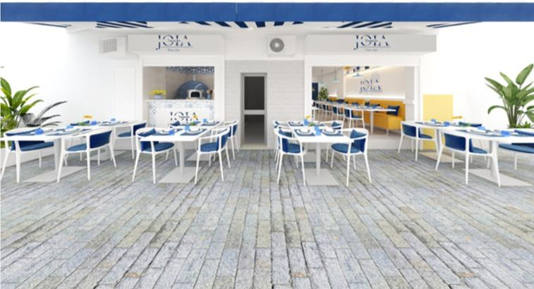
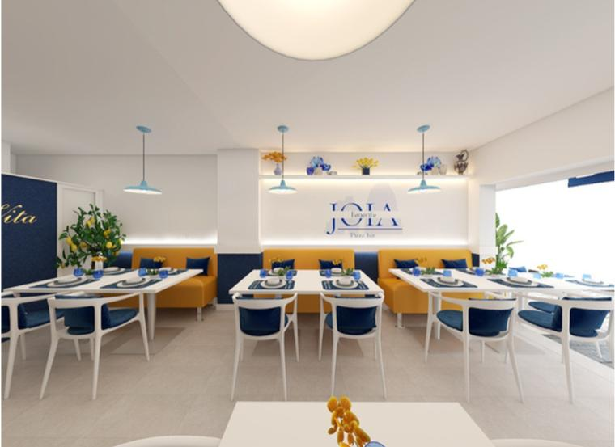
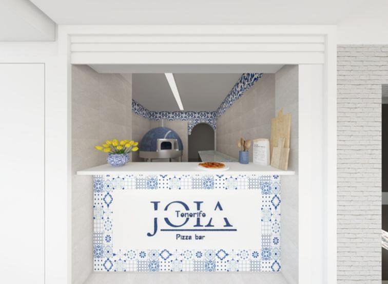

Italian cuisine
Pizza and inspiration from Italian tradition are at the heart of JOIA’s culinary vision.
A little corner of Capri.
The contemporary pizzeria in Los Cristianos, Tenerife: Italian cooking, good company and an atmosphere that already feels like a holiday. Welcome to the world of JOIA.
See the menu
01 — The project
JOIA brings together Italian cuisine and the timeless charm of Capri through a shared vision of hospitality. Pizza is at the heart of an experience shaped by flavour, thoughtful spaces and the pleasure of gathering around a table.
A Mediterranean identity expressed in every detail: sea blues, light tones, a warm welcome and the joy of sharing a meal.
Discover the atmosphere02 — The world of JOIA
Spaces and inspiration from the JOIA concept.
A little journey into our identity.


Pizza and inspiration from Italian tradition are at the heart of JOIA’s culinary vision.
A bright, welcoming atmosphere with blue details and effortless Mediterranean elegance.
The table as a meeting place, where food becomes an experience to share.
03 — Grow with us
We are looking for entrepreneurs and professionals who share the JOIA vision and want to invest in its growth.
Contribute capital and take a stake in the project, while the JOIA team handles day-to-day operations. Ownership and terms will be agreed together.
Become a partnerIt starts with a conversation
Get in touch to discover JOIA or explore a potential collaboration.
joiatenerife@hotmail.comCome and visit us: Callejón Gonzalo 2, 38650 Los Cristianos (Arona), Tenerife · +34 641 99 74 02
| Monday | 13:00–22:00 |
|---|---|
| Tuesday | 13:00–22:00 |
| Wednesday | 17:00–22:00 |
| Thursday | 13:00–22:00 |
| Friday | 13:00–22:00 |
| Saturday | 13:00–22:00 |
| Sunday | 13:00–23:00 |